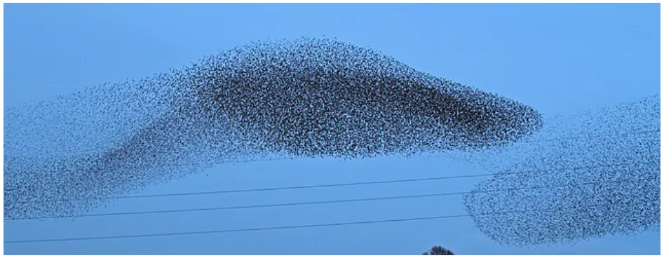
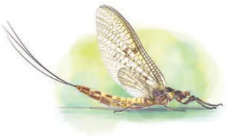
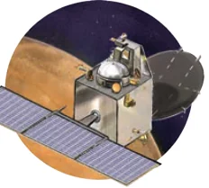
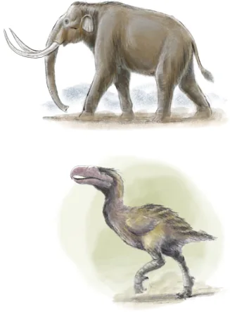

<!DOCTYPE html>
<html lang="en">
<head>
<meta charset="UTF-8">
<meta name="viewport" content="width=device-width,initial-scale=1">
<title>Getting a Sense for Large Numbers — Power Play</title>
<meta name="description" content="Class 8 Mathematics · Part 1 · Power Play · Getting a Sense for Large Numbers">
<link rel="icon" href="data:image/svg+xml,<svg xmlns='http://www.w3.org/2000/svg' viewBox='0 0 100 100'><text y='.9em' font-size='90'>📘</text></svg>">
<link rel="stylesheet" href="../../../assets/book.css">
<link rel="stylesheet" href="https://cdn.jsdelivr.net/npm/katex@0.16.11/dist/katex.min.css" crossorigin="anonymous">
</head>
<body>
<header class="topbar">
<div class="topbar-in">
  <div class="crumb">
    <span class="c1"><a href="../../../index.html">Library</a> · <a href="../../index.html">Class 8 Mathematics · Part 1</a></span>
    <span class="c2">Power Play · Getting a Sense for Large Numbers</span>
  </div>
  <a class="tb-btn" data-nav="prev" href="../../02-power-play/11-linear-growth-vs-exponential-growth/index.html" title="Linear Growth vs. Exponential Growth">←</a>
  <details class="drawer"><summary class="tb-btn" title="Sections in this chapter">☰</summary>
<div class="drawer-panel"><div class="dh">Power Play</div><a href="../01-experiencing-the-power-play-2.1/index.html">2.1 Experiencing the Power Play ...; An Impossible Venture!</a><a href="../02-exponential-notation-and-operations-2.2/index.html">2.2 Exponential Notation and Operations</a><a href="../03-figure-it-out/index.html">Figure it Out</a><a href="../04-magical-pond/index.html">Magical Pond</a><a href="../05-how-many-combinations/index.html">How Many Combinations</a><a href="../06-the-other-side-of-powers-2.3/index.html">2.3 The Other Side of Powers</a><a href="../07-power-lines/index.html">Power Lines</a><a href="../08-powers-of-10-2.4/index.html">2.4 Powers of 10</a><a href="../09-scientific-notation/index.html">Scientific Notation</a><a href="../10-did-you-ever-wonder-2.5/index.html">2.5 Did You Ever Wonder?</a><a href="../11-linear-growth-vs-exponential-growth/index.html">Linear Growth vs. Exponential Growth</a><a href="../12-getting-a-sense-for-large-numbers/index.html" aria-current="page">Getting a Sense for Large Numbers</a><a href="../13-figure-it-out/index.html">Figure it Out</a><a href="../14-summary/index.html">SUMMARY</a><a href="../15-figure-it-out/index.html">Figure it Out</a><a href="../16-figure-it-out/index.html">Figure it Out</a></div></details>
  <a class="tb-btn" data-nav="next" href="../../02-power-play/13-figure-it-out/index.html" title="Figure it Out">→</a>
  <button class="tb-btn" data-theme-toggle title="Toggle light / dark" aria-label="Toggle light or dark theme">◐</button>
</div>
<div class="progress"><span style="width:20.9%"></span></div>
</header>
<main class="wrap">
<div class="sec-head">
  <p class="eyebrow"><a href="../index.html">Chapter 2 · Power Play</a></p>
  <h1>Getting a Sense for Large Numbers</h1>
  <p class="sec-meta">Textbook pages 18–26 · 23 figures</p>
</div>
<article class="prose">
<p>Last year, we learnt about lakhs and crores, as well as millions and</p>
<p>billions. A lakh is 10 (1,00,000), a crore is 10 (1,00,00,000), and an arab</p>
<p>is 10 (1,00,00,00,000), whereas a million is 10 (1,000,000) and a billion</p>
<p>is 10 (1,000,000,000). You might know the size of the world’s human population. Have you ever wondered how many ants there might be in the world or how long ago humans emerged? In this section, we shall explore numbers significantly larger than arabs and billions. We shall use powers of 10 to represent and compare these numbers in each case.</p>
<p>10 As of mid-2025, there are only two northern white rhinos remaining in the world, both females, and they reside at the</p>
<p>Ol Pejeta Conservancy in Kenya \((= 2 \times 10\) ).</p>
<figure class="fig wide"></figure>
<p>As of early 2024, the total population of Hainan gibbons is a</p>
<div class="mathblock"><p>meagre 42 ( \(\approx 4 \times 10\) ).</p></div>
<p>There are just 242 Kakapo alive as of mid-2025 ( \(\approx 2 \times 10\) ). There are fewer than 3000 Komodo dragons in the world, all</p>
<p>based in Indonesia ( \(\approx 3 \times 10\) ). A 2005 estimate of the maned wolf population showed that there are more than 17000 of them; most are located in Brazil</p>
<div class="mathblock"><p>\((1.7 \times 10\) ).</p></div>
<figure class="fig wide"></figure>
<p>As of 2018, there are around 4.15 lakh African elephants</p>
<div class="mathblock"><p>( \(\approx 4 \times 10\) ).</p></div>
<p>There are an estimated 50 lakh \(/ 5\) million American alligators as</p>
<div class="mathblock"><p>of \(2025 (5 \times 10\) ).</p></div>
<p>The global camel population is estimated to be over 3.5 crore/</p>
<p>35 million \((3.5 \times 10\) ). India has only about 2.5 lakhs of them. The global horse population is around 5.8 crore \(/ 58\) million</p>
<p>\((5.8 \times 10\) ), with about half of them in America.</p>
<p>10 More than 20 crore \(/ 200\) million \((2 \times 10\) ) water buffaloes are estimated worldwide, with a vast majority of them in Asia.</p>
<p>10 The estimated global population of starlings is around 1.3 arab/1.3 billion (_________). The global human population as of</p>
<p>2025 is 8.2 arab/8.2 billion \((8.2 \times 10\) ).</p>
<figure class="fig wide"></figure>
<p>A picture of a starling murmuration over a farm in the UK. Starling murmuration is a mesmerising aerial display of thousands of starlings flying in synchronised, swirling patterns. It is often described as a ‘choreographed dance’.</p>
<figure class="fig wide"></figure>
<figure class="fig wide"></figure>
<p>African elephants, can we say that there are nearly 20,000 people for every African elephant?</p>
<p>10 The global chicken population living at any time is estimated at</p>
<div class="mathblock"><p>\(\approx 33\) billion \((3.3 \times 10\) ).</p></div>
<p>10 The estimated number of trees (2023) globally stands at 30</p>
<p>kharab/3 trillion \((3 \times 10\) ). One kharab is 100 arab, and one trillion is 1000 billion.</p>
<p>10 The estimated mosquito population worldwide (2023) is 11 neel/110 trillion (________). A derived estimate of the population of the Antarctic krill</p>
<p>stands at 50 neel/500 trillion \((5 \times 10\) ).</p>
<p>10 An estimate of the beetle population stands</p>
<p>at 1 padma/1 quadrillion \((1 \times 10\) ). The estimate of the earthworm population is also at 1 padma/1 quadrillion.</p>
<p>10 The estimated population of ants globally</p>
<p>is 20 padma/20 quadrillion \((2 \times 10\) ). Ants alone outweigh all wild birds and wild mammals combined.</p>
<p>10 is supposed to be the number of grains of sand on all beaches and deserts on Earth. This is enough sand to give every ant 10 little sand castles to live in.</p>
<p>10 The estimated number of stars in the observable universe is</p>
<div class="mathblock"><p>\(2 \times 10\) .</p></div>
<p>10 There are an estimated \(2 \times 10\) drops of water on Earth (assuming 16 drops per millilitre).</p>
<p>Calculate and write the answer using scientific notation:</p>
<ul class="qlist">
<li><span class="mk">(i)</span><span class="lt">How many ants are there for every human in the world?</span></li>
<li><span class="mk">(ii)</span><span class="lt">If a flock of starlings contains 10,000 birds, how many flocks</span></li>
</ul>
<p>could there be in the world?</p>
<figure class="fig wide"></figure>
<figure class="fig wide"></figure>
<ul class="qlist">
<li><span class="mk">(iii)</span><span class="lt">If each tree had about 10 leaves, find the total number of leaves</span></li>
</ul>
<p>on all the trees in the world.</p>
<ul class="qlist">
<li><span class="mk">(iv)</span><span class="lt">If you stacked sheets of paper on top of each other, how many</span></li>
</ul>
<p>would you need to reach the Moon?</p>
<figure class="fig side-fig"></figure>
<p>A different way to say your age!</p>
<p>“How old are you?” asked Estu. “I completed 13 years a few weeks ago!” said Roxie. “How old are you?” asked Estu again. “I’m 4840 days old today!” said Roxie. “How old are you?” asked Estu again. “I’m ______ hours old!” said Roxie. Make an estimate before finding this number. Estu: “I am 4070 days old today. Can you find out my</p>
<p>date of birth?” What could this number mean? Find out!</p>
<p>If you have lived for a million seconds, how old would you be? We shall look at approximate times and timelines of some events and phenomena, and use powers of 10 to represent and compare these quantities.</p>
<figure class="fig wide"></figure>
<p>\(10 = 1\) second - Time taken for a ball thrown up to fall back on the ground (typically a few seconds).</p>
<p>\(10 = 10\) seconds - Time blood takes to complete one full circulation</p>
<p>through the body: \(10 - 20\) seconds \((1 \times 10 - 2 \times 10\) seconds). - Typical waiting time at a traffic signal.</p>
<p>Isn’t it quite amazing how someone is able to estimate things like the number of ants in the world or the time blood takes to fully circulate? You may carry this wonder whenever you encounter such facts. You will come across such facts in subjects like Science and Social Science, where such estimates are made frequently.</p>
<p>10 seconds - Time needed to make a cup of tea: \(5 - 10\) minutes</p>
<p>\(\approx 1.6\) minutes ( \(\approx 4 \times 10 - 8 \times 10\) seconds).</p>
<p>- Time for light to reach the Earth from the Sun: about</p>
<p>8 minutes ( \(\approx 5 \times 10\) seconds).</p>
<figure class="fig wide"></figure>
<p>These liars!! It never gets cooked before 10 minutes…</p>
<p>They should approximate it as</p>
<p>order of 10 seconds noodles - that way whether it takes 120 seconds or 900 seconds, the claim will be true.</p>
<p>10 seconds - Satellites in low Earth orbits take</p>
<p>\(\approx 16.6\) minutes between 90 minutes ( \(\approx 5.5 \times 10\) seconds) to 2 hours to complete one full revolution around the Earth.</p>
<figure class="fig side-fig"></figure>
<p>10 seconds - The time needed to digest a meal: about \(\approx 2.7\) hours \(2 - 4\) hours to pass through the stomach.</p>
<p>- Lifespan of an adult mayfly: about a day</p>
<div class="mathblock"><p>( \(\approx 9 \times 10\) seconds).</p></div>
<p>10 seconds \(\approx 1.16\) days and 10 seconds \(\approx 11.57\) days. Think of some</p>
<p>events or phenomena whose time is of the order of (i) 10 seconds and</p>
<ul class="qlist">
<li><span class="mk">(ii)</span><span class="lt">10 seconds. Write them in scientific notation.</span></li>
</ul>
<p>10 seconds - Time spent sleeping in a year: about 4 months. \(\approx 115.7\) days \(/ \approx 3.8\) months - Time taken by Mangalyaan mission to reach Mars: _{7} 298 days ( \(\approx 2.65 \times 10\) seconds). - Time taken by Mars for one full revolution around the Sun: 687 Earth-days/1.88 Earth-years</p>
<figure class="fig side-fig"></figure>
<div class="mathblock"><p>( \(\approx 6 \times 10\) seconds).</p></div>
<p>10 seconds - The typical lifespan of most dogs is 3 to 15 years. \(\approx 3.17\) years</p>
<p>10 seconds - The orbital period of Halley’s comet is \(75 - 79\) years; \(\approx 31.7\) years the next expected return is in the year 2061</p>
<div class="mathblock"><p>( \(\approx 2.4 \times 10\) seconds).</p></div>
<p>- Duration of one full revolution of Neptune around the Sun: 60,190 Earth-days/~165 Earth-years or</p>
<p>89,666 Neptunian days/1 Neptunian-year ( \(\approx 5.2 \times 10\) seconds). A day on Neptune is about 16.1 hours</p>
<figure class="fig wide"></figure>
<figure class="fig wide"></figure>
<p>Notice how rapid exponential growth is \(- 10\) seconds is less than a</p>
<p>fortnight, but 10 seconds is a whopping 31 years (about half the life expectancy of a human)!</p>
<p>10 seconds - The Chola dynasty ruled for more than 900 years</p>
<p>\(\approx 317\) years ( \(\approx 3 \times 10\) seconds) between the 3rd Century BCE and 12th Century CE.</p>
<p>10 seconds - Age of the oldest known living tree: about 5000 years</p>
<p>\(\approx 3,170\) years ( \(\approx 1.57 \times 10\) seconds).</p>
<p>- Time since the last peak ice age: \(19,000 - 26,000\) years</p>
<p>ago ( \(\approx 6 \times 10\) seconds \(- 8.2 \times 10\) seconds).</p>
<p>10 seconds - Early Homo sapiens first appeared \(2 - 3\) lakh years ago</p>
<p>\(\approx 31,700\) ( \(\approx 7 \times 10 - 9 \times 10\) seconds). The entire population years around that time could fit in a large cricket stadium.</p>
<figure class="fig side-fig"></figure>
<p>10 seconds - The Steppe Mammoth is \(\approx 3.17\) lakh estimated to have years appeared around \(8 - 18\) lakh years ago.</p>
<p>10 seconds \(- A\) fossil of Kelenken Guillermoi, \(\approx 3.17\) million a type of terror bird, is dated years to 15 million years ago ( \(\approx\) _______________ seconds).</p>
<p>10 seconds - Age of Himalayas: 5.5 crore years/55 million years ( \(\approx 1.7\)</p>
<p>\(\approx 3.17\) crore \(\times 10\) seconds); they continue to grow a few mm every years year.</p>
<p>- Dinosaurs went extinct 6.6 crore years ago/66 million</p>
<p>years ago ( \(\approx 2 \times 10\) seconds). - Dinosaurs first appeared more than 20 crore/200 million</p>
<p>years ago ( \(\approx 6 \times 10\) seconds). - It takes about 23 crore years for the Sun to make one</p>
<p>complete trip around the Milky Way ( \(\approx 7 \times 10\) seconds).</p>
<figure class="fig wide"></figure>
<figure class="fig wide"></figure>
<p>10 seconds - Plants on land started 47 crore/470 million years \(\approx 31.7\) crore years ago ( \(\approx\) _______________ seconds).</p>
<p>10 seconds The oldest fossil evidence suggests that bacteria \(\approx 3.17\) billion years first appeared about 3.7 billion years ago.</p>
<p>- The Earth is 4.5 billion years old. - The Milky Way galaxy was formed 13.6 billion years ago, and the Universe was formed 13.8 billion years ago.</p>
<p>Notice that 10 seconds is of the order of the lifespan of a human,</p>
<p>whereas 10 seconds ago the universe did not exist according to modern physics!! The exponential notation can capture very large quantities in a concise manner.</p>
<p>Calculate and write the answer using scientific notation:</p>
<ul class="qlist">
<li><span class="mk">(i)</span><span class="lt">If one star is counted every second, how long would it take to</span></li>
</ul>
<p>count all the stars in the universe? Answer in terms of the number of seconds using scientific notation.</p>
<ul class="qlist">
<li><span class="mk">(ii)</span><span class="lt">If one could drink a glass of water (200 ml) every 10 seconds,</span></li>
</ul>
<p>how long would it take to finish the entire volume of water ThisTry on Earth?</p>
<p>Very large quantities are often beyond our experience and comprehension. To put them into perspective, we can relate and compare them with quantities we are familiar with. This can give an essence of how large a number or a measure is!</p>
<h2 id="s-2-5-a-pinch-of-history">2.5 A Pinch of History</h2>
<p>In the Lalitavistara, a Buddhist treatise from the first century BCE, we see</p>
<p>number - names for odd powers of ten up to 10 . The following occurs as part of the dialogue between the mathematician Arjuna and Prince Gautama, the Bodhisattva.</p>
<p>“Hundred kotis are called an ayuta (10 ), hundred ayutas a niyuta (10 ),</p>
<p>hundred niyutas a kankara (10 ), …, hundred sarva-balas a visamjna-</p>
<p>gati (10 ), hundred visamjna-gatis a sarvajna (10 ), hundred sarvajnas</p>
<p>a vibhutangama (10 ), a hundred vibhutangamas is a tallakshana (10 ).”</p>
<p>Mahaviracharya gives a list of 24 terms (i.e., up to 10 ) in his treatise Ganita-sara-sangraha. An anonymous Jaina treatise Amalasiddhi gives a</p>
<p>list with a name for each power of ten up to 10 (dasha-ananta). A Pali</p>
<p>grammar treatise of Kāccāyana lists number-names up to 10 , named asaṅkhyeya.</p>
<figure class="fig wide"></figure>
<figure class="fig wide"></figure>
<p>For expressing high powers of ten, Jaina and Buddhist texts use bases</p>
<p>like sahassa (thousand) and koṭi (ten million); for instance, prayuta (10 ) would be dasa sata sahassa (ten hundred thousand). The modern naming is similar to this, where we say,</p>
<div class="mathblock"><p>A hundred \(100 \times 1000 = 1,00,000 10 \times 10 = 10\)</p></div>
<p>thousand is a lakh</p>
<p>A hundred lakhs \(100 \times 1,00,000 = 1,00,00,000 10 \times 10 = 10\) is a crore</p>
<p>A hundred crores \(100 \times 1,00,00,000 = 1,00,00,00,000 10 \times 10 = 10\) is an arab</p>
<p>A hundred arab is \(100 \times 1,00,00,00,000 10 \times 10 = 10\)</p>
<div class="mathblock"><p>a kharab \(= 1,00,00,00,00,000\)</p></div>
<p>Continuing this, a hundred kharab is a neel (10 ), a hundred neel is a</p>
<p>padma (10 ), a hundred padma is a shankh (10 ) and a hundred shankh</p>
<p>is a maha shankh (10 ). In the American/International system, we say</p>
<p>A thousand thousand \(1000 \times 1000 = 1,000,000 10 \times 10 = 10\) is a million</p>
<p>A thousand million is \(1000 \times 1,000,000 = 1,000,000,000 10 \times 10 = 10 a\) billion</p>
<p>A thousand billion is \(1000 \times 1,000,000,000 10 \times 10 = 10\)</p>
<div class="mathblock"><p>an trillion \(= 1,00,000,000,000\)</p></div>
<p>Continuing this, a thousand trillion is a quadrillion (10 ). This pattern</p>
<p>continues. Observe the names million (10 ), billion (10 ), trillion (10 ),</p>
<p>quadrillion (10 ), quintillion (10 ), sextillion (10 ), septillion (10 ),</p>
<p>octillion (10 ), nonillion (10 ), decillion (10 ). What does the first part of each name denote?</p>
<p>The number 10 is also called a googol. The estimated number</p>
<p>of atoms in the universe is 10 to 10 . The number 10 is called a googolplex. It is hard to imagine how large this number is! The currency note with the highest denomination in India currently is 2000 rupees. Guess what is the highest denomination of a currency note ever, across the world. The highest numerical value banknote ever</p>
<p>78 82 googol</p>
<p>printed was a special note valued 1 sextillion pengő (10 or 1 milliard bilpengő) printed in Hungary in 1946, but it was never issued. In 2009,</p>
<p>Zimbabwe printed a 100 trillion (10 ) Zimbabwean dollar note, which at the time of printing was worth about $30.</p>
<figure class="fig wide"></figure>
<figure class="fig wide"></figure>
<ul class="qlist">
<li><span class="mk">1.</span><span class="lt">Find out the units digit in the value of \(2 \div 4\) ? [Hint: \(4 = 2\) ]</span></li>
</ul>
<ul class="qlist">
<li><span class="mk">2.</span><span class="lt">There are 5 bottles in a container. Every day, a new container is</span></li>
</ul>
<p>brought in. How many bottles would be there after 40 days?</p>
<ul class="qlist">
<li><span class="mk">3.</span><span class="lt">Write the given number as the product of two or more powers in</span></li>
</ul>
<p>three different ways. The powers can be any integers.</p>
<ul class="qlist">
<li><span class="mk">(i)</span><span class="lt">64 (ii) 192 (iii) 32</span></li>
</ul>
<p>\(3 8 - 5\)</p>
<ul class="qlist">
<li><span class="mk">4.</span><span class="lt">Examine each statement below and find out if it is ‘Always True’,</span></li>
</ul>
<p>‘Only Sometimes True’, or ‘Never True’. Explain your reasoning.</p>
<ul class="qlist">
<li><span class="mk">(i)</span><span class="lt">Cube numbers are also square numbers.</span></li>
<li><span class="mk">(ii)</span><span class="lt">Fourth powers are also square numbers.</span></li>
<li><span class="mk">(iii)</span><span class="lt">The fifth power of a number is divisible by the cube of that</span></li>
</ul>
<p>number.</p>
<ul class="qlist">
<li><span class="mk">(iv)</span><span class="lt">The product of two cube numbers is a cube number.</span></li>
<li><span class="mk">(v)</span><span class="lt">q is both a 4th power and a 6th power (q is a prime number).</span></li>
</ul>
<ul class="qlist">
<li><span class="mk">5.</span><span class="lt">Simplify and write these in the exponential form.</span></li>
<li><span class="mk">(i)</span><span class="lt">\(10 \times 10\) (ii) \(5 \div 5\)</span></li>
</ul>
<p>\(- 2 - 5 7 4\)</p>
<ul class="qlist">
<li><span class="mk">(iii)</span><span class="lt">\(9 \div 9\) (iv) (13 )</span></li>
</ul>
<p>\(- 7 4 - 2 - 3\)</p>
<ul class="qlist">
<li><span class="mk">(v)</span><span class="lt">m n (mn)</span></li>
</ul>
<ul class="qlist">
<li><span class="mk">6.</span><span class="lt">If \(12 = 144\) what is</span></li>
</ul>
<ul class="qlist">
<li><span class="mk">(i)</span><span class="lt">(1.2) (ii) (0.12)</span></li>
</ul>
<ul class="qlist">
<li><span class="mk">(iii)</span><span class="lt">(0.012) (iv) 120</span></li>
</ul>
<figure class="fig wide"></figure>
</article>
<nav class="pager"><a class="" data-nav="prev" href="../../02-power-play/11-linear-growth-vs-exponential-growth/index.html"><span class="dir">← Previous</span><span class="t">Linear Growth vs. Exponential Growth</span><span class="ch">Power Play</span></a><a class="nx" data-nav="next" href="../../02-power-play/13-figure-it-out/index.html"><span class="dir">Next →</span><span class="t">Figure it Out</span><span class="ch">Power Play</span></a></nav>
</main><footer class="site">Generated from the source textbook PDFs · text, figures and exercises belong to their respective publishers.</footer><script defer src="https://cdn.jsdelivr.net/npm/katex@0.16.11/dist/katex.min.js" crossorigin="anonymous"></script>
<script defer src="https://cdn.jsdelivr.net/npm/katex@0.16.11/dist/contrib/auto-render.min.js" crossorigin="anonymous"
  onload="renderMathInElement(document.body,{delimiters:[
    {left:'\\(',right:'\\)',display:false},
    {left:'$$',right:'$$',display:true},
    {left:'\\[',right:'\\]',display:true}],throwOnError:false,ignoredTags:['script','noscript','style','textarea','pre','code']})"></script>
<script src="../../../assets/book.js"></script>
<script defer src="../../../../assets/search.js"></script>
</body>
</html>
